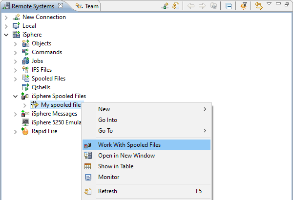
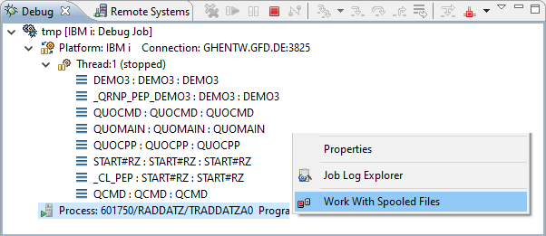
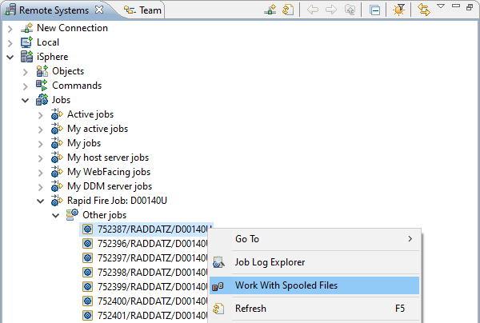
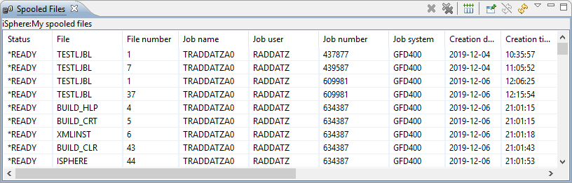
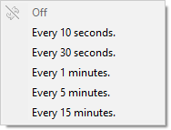
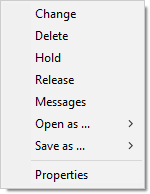

Use the iSphere Spooled Files view to view and manage the spooled files on an IBM i server. This view can be pinned so that it is restored when RDi is restarted. The pin option also allows pinning multiple instances of the view. To do so, open a view and pin it, then open a second view and pin it and so on.
The Work With Spooled Files option is available from the following context menus:
| Hint: Holding the Ctrl key while selecting 'Work With Spooled Files' opens and pins the view. |
Use the context menu of an iSphere spooled file filter to open the view with the Work With Spooled Files option.

Or use the context menu of a Job of a RSE Job filter to open the Work With Spooled Files view to list the spooled files of the selected job.
All views are opened and pinned, when more than one job has been selected.

Or use the context menu of the Job node of the debug view when a program stops at a breakpoint to open the Work With Spooled Files view to list all spooled files of the job being debugged.

The Work With Spooled Files view looks like that:

The content of the view may be refreshed manually, or the display may be set to refresh automatically after a specified interval between 10 seconds and 15 minutes. The refresh menu options are available from the view menu.

The view is also refreshed when the associated filter is changed.
The available toolbar buttons from left to right are:
| Notice: Pinned views are preserved and reopened, when the workbench is restarted, except for views that had been opened from a breakpoint. These views can be pinned, but are not reopened, when the workbench is restarted. |
Use the context menu (right click) of a spooled file to perform actions on it:

The available options are:
| Change | - | Use this option to run the Change Spooled File Attributes (CHGSPLFA) command to change the attributes of the spooled file. |
| Delete | - | Use this option to delete the specified spooled file. |
| Hold | - | Use this option to hold the spooled file. |
| Release | - | Use this option to release the specified spooled file from a hold status. |
| Messages | - | Specifies the user data of the spooled file. |
| Open as | - | Use this option to open the spooled file in Text, HTML or PDF format. |
| Save as | - | Use this option to save the spooled file in Text, HTML or PDF format. |
| Properties | - | Use this option to display the properties of the spooled file. |
The Open as... and Save as... menu options let you select the format in which to open or save the spooled file: